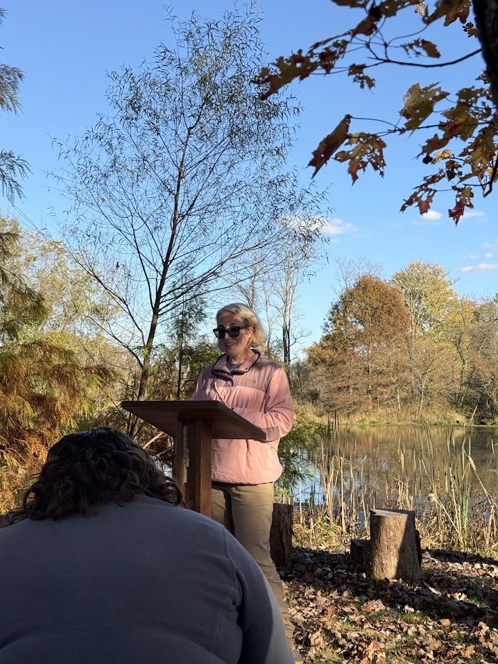

Teaching &Research
My teaching focuses on the practice of sustainable finance, drawing on my experience helping to develop the field within capital markets.

My research interests span political economy, ethics, theology, ecology, and the history of economic and political thought. I explore how traditions of moral and political reflection can illuminate contemporary questions of finance, democracy, inequality, climate change, and institutional design, and help us imagine different ways of organizing economic life.
- Christian democracy and twentieth-century Italian political thought
- Political economy, moral philosophy, and economic alternatives
- Theology, ecology, and social ethics
- Sustainable and faith-aligned investing
- Degrowth, regenerative economics, and institutional transformation
 At the Farminary, Princeton
At the Farminary, PrincetonWhat working the soil teaches
Alongside my work in finance, history, theology and the economy, I am deepening my understanding of regenerative farming and the relationships among land, food, community, and economic life. My work and learning at Princeton Theological Seminary’s Farminary bring these questions into a setting where theological reflection meets the practical work of growing food and caring for soil.
I am interested not only in how we cultivate land, but in what working with it can teach us about interdependence, limits, care, and responsibility, especially those of us whose lives as economists, city dwellers, white-collar professionals, or academics can keep us at a distance from the living systems on which we depend.
Oikos Lab
These interests are also informing Oikos Lab, an idea I am developing to connect land-based learning, ecological care, and new approaches to economic life.
I am exploring how universities and other learning communities might bring food growing, ecological restoration, and reflection on economics and ethics into closer relationship, using their land not simply as a backdrop to education, but as a place of learning, nourishment, and shared responsibility.
The aim is to connect ideas with practice: to ask what institutions oriented toward ecological resilience and the common good might look like, and how we might begin to build them.
collaborationsGet in touch →